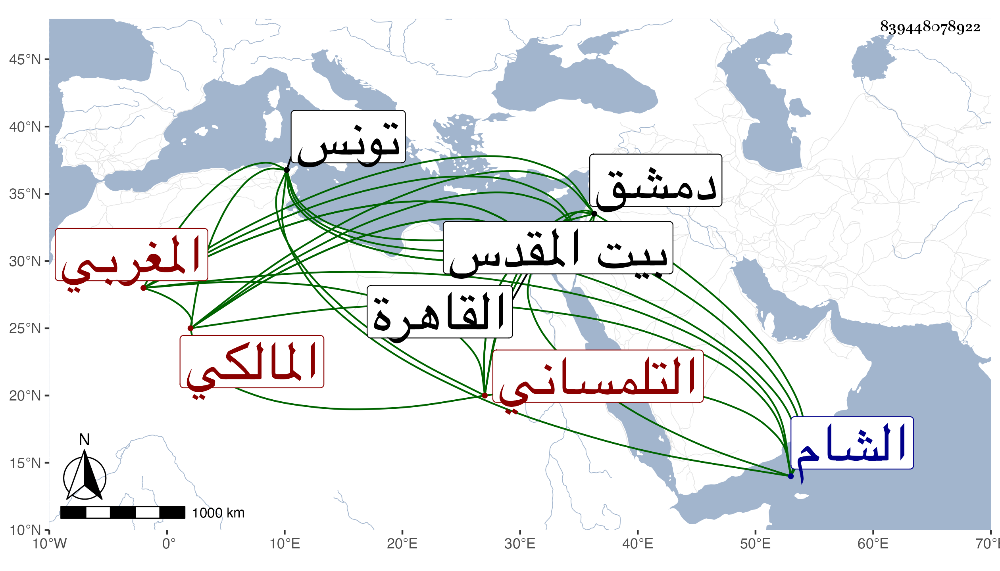

0902Sakhawi.DawLamic.ITO20230111-ara1.EIS1600.839448078922
Biography ID: 839448078922
252
محمد بن يحيى أو إبرهيم بن عبد الرحمن أبو الفضل بن أبي زكريا بن أبي محمد التلمساني المغربي المالكي ويعرف بابن الإمام وهو بكنيته أشهر . من بيت شهير ارتحل في سنة عشر للحج فأقام بتونس أشهرا ، ثم قدم القاهرة فحج منها وعاد إليها ثم سافر منها في سنة اثنتي عشرة إلى الشام فزار بيت المقدس وتزاحم عليه الناس بدمشق حين علموا فضيلته وأجلوه وأخذوا عنه ، ثم عاد إلى القاهرة فدام بها أشهرا ثم رجع إلى وطنه . ذكره المقريزي في عقوده هكذا وقال إنه كان صاحب فنون عقلية ونقية قل علم إلا ويشارك فيه مشاركة جيدة ويجاري أربابه مجاراة حسنة مع حسن السمت وفصاحة العبارة وجودة الكلام إلى طريقة جميلة من تصوف وزهد وشرف نفس وقناعة وإعراض عن حب الشرف والرياسة اجتمعت به غير مرة ورأيت منه ما يسر النفس ويبهجها ثم حكى عني حكاية .
